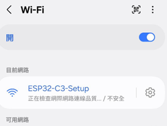
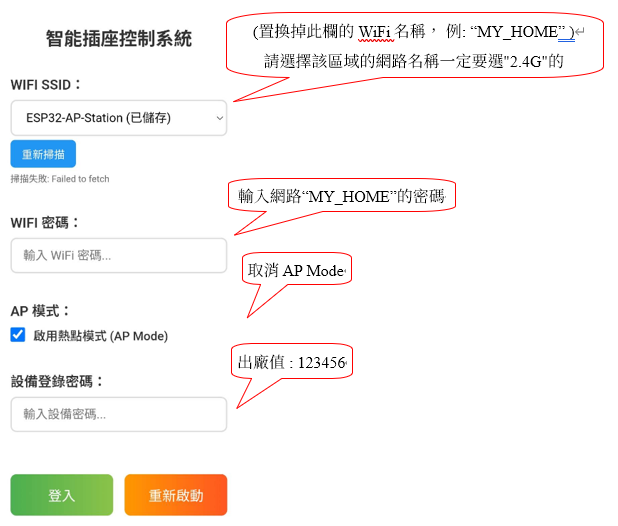
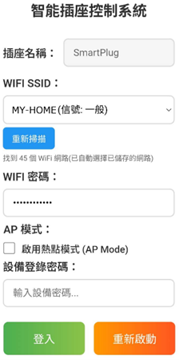
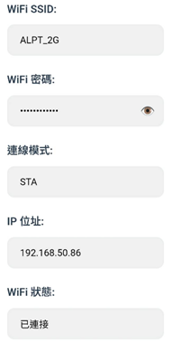
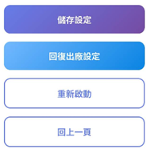

SmartPlug 設定指南
WiFi 版本 | 快速安裝與連線手冊
1. 連接設備熱點
初次設定時，先讓手機WIFI網路設定連接到插座的熱點訊號：
- 開啟手機或電腦的 WiFi 設定介面。
- 尋找並連接至名稱為 ESP32-C3-Setup 的WIFI網路。
- 此熱點無需密碼，直接點擊連接即可。

圖 1：手機 WiFi 列表，連接至設備熱點
2. 進入設定頁面
連接成功後，請開啟網頁瀏覽器（如 Chrome, Safari）。
- 在網址列輸入：http://192.168.4.1
- 您將會看到如下圖的設定介面：

圖 2：設備初始設定畫面
⚠️ 關鍵設定說明：
- WiFi SSID：請選擇您家中的 WiFi 名稱（例：MY_HOME）。
注意：僅支援 2.4G 網路，請勿選擇 5G 頻段的 WiFi。
- WiFi 密碼：請輸入您家中 WiFi 的連線密碼。
- AP 模式：請取消勾選「啟用熱點模式 (AP Mode)」。
- 設備登錄密碼：預設出廠值為 123456。
3. 完成設定與重啟
確認上述資訊無誤後，點擊下方的登入按鍵，進入操作頁面
💡 關於插座 AP 熱點的說明：
一旦您取消了「AP 熱點模式」，手機WIFI網路將無法找到 ESP32-C3-Setup 這個WIFI熱點，此時需選擇切換到您的家用WIFI網路。

圖 3：取消勾選 AP Mode，方能取用家用的 WiFi 網路
設定完畢執行重新啟動：
- 若取消勾選AP Mode，網頁會跳出提示框：
'WIFI連線後，瀏覽器位址列輸入"http://smartplug.local" ，重新進入登錄頁面'
- 等待設備啟動完成。
- 將您的手機 WiFi 重新連回原本的家中網路（例：MY_HOME 2.4G）。
- 若未取消勾選AP Mode，網頁會跳出提示框：
1. WIFI連網選擇 "ESP32-C3-Setup"(無須輸入密碼)
2. WIFI連線後，瀏覽器位址列輸入"192.168.4.1" ，重新進入登錄頁面'
表示爾後仍會以初始啟動模式啟動
4. 日常操作方式
完成上述 1~3 步驟後，即完成初始設定。
日後要控制插座時，只需確保手機或電腦與插座連接在同一個 WiFi 網路下，開啟瀏覽器輸入以下網址即可進入控制台：
http://smartplug.local
5. 系統狀態與故障排除
系統狀態 (STA 模式)
進入操作頁面中的"系統設定"後，您會看到連線模式已變更為 STA，且會顯示連線的 IP 位址。

圖 4：系統進入 STA 模式，顯示連線的 IP
修改設定與儲存
系統設定頁面的「機櫃名稱」及「密碼設定」可自行修改，修改後務必執行「儲存設定」且系統顯示「設定已成功儲存」方能生效。
🔄 忘記密碼怎麼辦？(恢復出廠設定)
如果您忘記了修改過的「登入密碼」，導致無法進入操作頁面：
請長按插座設備上的 Reset 鍵 3 秒鐘。
設備將會恢復出廠值，屆時請從步驟 1 開始重新設定即可。

圖 5：儲存設定與回復出廠設定按鈕